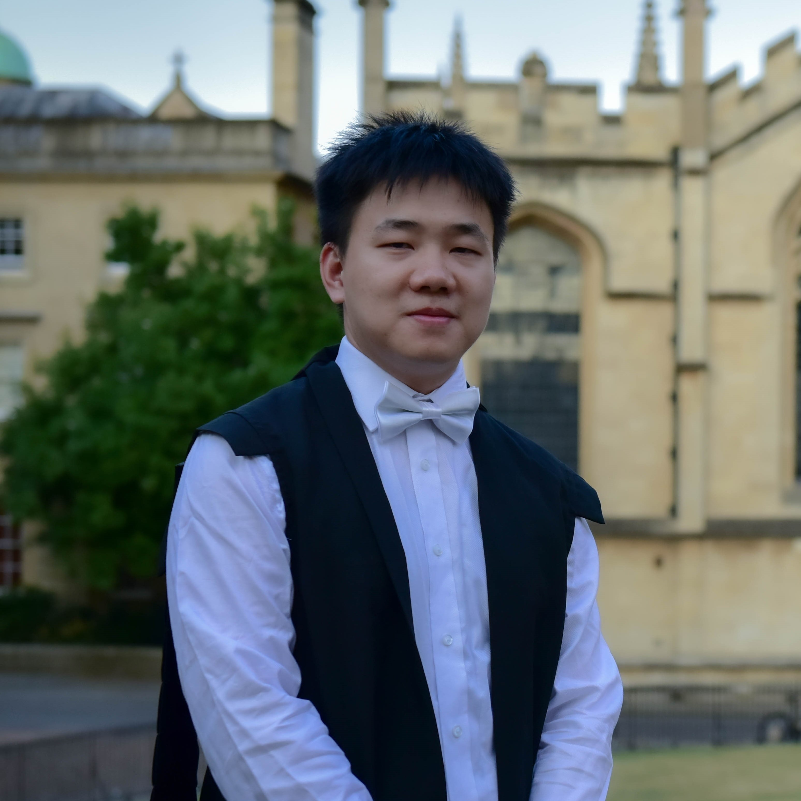

Overview
With the rapid development of point-cloud acquisition techniques (e.g., Microsoft Kinect) and computing devices, 3D data (point clouds, depth images, meshes) processing has become a rapidly growing research area in computer vision, pattern recognition and computer graphics. Extensive investigations have been conducted on 3D related topics, such as 3D modeling, 3D scene reconstruction/understanding, 3D object recognition, 3D face recognition, and 3D animation. In this tutorial, we will mainly focus on point cloud reconstruction and segmentation.Existing 3D point cloud segmentation methods can be broadly divided into two categories based on the segmentation granularity, i.e., semantic segmentation and instance segmentation methods. Due to the unique properties (i.e., unstructured, irregular, and orderless) of 3D point clouds, it is still highly challenging to achieve fast and robust segmentation of 3D point clouds. Recently, a large number of 3D point cloud segmentation algorithms have been proposed in literature. The proposed tutorial will therefore present a comprehensive review and analysis of the state-of-the-art 3D segmentation algorithms. The tutorial will also provide extensive performance evaluation results of the state-of-the-art algorithms on several benchmark datasets, along with insightful discussions and analyses. Moreover, a number of interesting 3D related applications will be introduced in the tutorial. Finally, several directions for future work will be discussed.
The main objective of the tutorial is to stimulate communication between researchers from different areas (including computer vision, computer graphics, and machine learning) and from different sectors (e.g., academia and industry). Particularly, this tutorial will bridge the gap between different communities by presenting most existing 3D point cloud reconstruction and segmentation pipelines in a unified framework.
Invited Speakers
Dr. Yulan Guo
Associate Professor, Sun Yat-sen University & National University of Defense Technology
Yulan Guo is an associate professor. He has authored over 100 articles in journals and conferences. His current research interests focus on 3D vision, particularly on 3D feature learning, 3D modeling, and scene understanding. Dr. Guo received the ACM China SIGAI Rising Star Award in 2019. He served as a guest editor for IEEE TPAMI, an associate editor for IET Computer Vision and IET Image Processing, and an area chair for CVPR 2021 and ICPR 2020.
Associate Professor, Sun Yat-sen University & National University of Defense Technology
Yulan Guo is an associate professor. He has authored over 100 articles in journals and conferences. His current research interests focus on 3D vision, particularly on 3D feature learning, 3D modeling, and scene understanding. Dr. Guo received the ACM China SIGAI Rising Star Award in 2019. He served as a guest editor for IEEE TPAMI, an associate editor for IET Computer Vision and IET Image Processing, and an area chair for CVPR 2021 and ICPR 2020.
Dr. Ronald Clark
Research Fellow, Imperial College London
Ronald Clark is a research fellow at Imperial College London where he holds an Imperial College Research Fellowship (ICRF). His research interests are in mobile perception including robust 3D reconstruction on mobile devices, SLAM and semantic scene understanding. He has received various accolades for his academic work including a best paper honourable mention at CVPR 2018. He has co-organized and chaired multiple succesful workshops at CVPR, ICCV and ICRA.
Research Fellow, Imperial College London
Ronald Clark is a research fellow at Imperial College London where he holds an Imperial College Research Fellowship (ICRF). His research interests are in mobile perception including robust 3D reconstruction on mobile devices, SLAM and semantic scene understanding. He has received various accolades for his academic work including a best paper honourable mention at CVPR 2018. He has co-organized and chaired multiple succesful workshops at CVPR, ICCV and ICRA.

Dr. Bo Yang
Assistant Professor, University of Oxford and Hong Kong Polytechnic University
Dr. Bo Yang is an incoming Assistant Professor at The Hong Kong Polytechnic University which he will be joining in November 2020. He completed his DPhil degree from the Department of Computer Science at University of Oxford. His research interests lie in deep learning, computer vision, and robotics.
Assistant Professor, University of Oxford and Hong Kong Polytechnic University
Dr. Bo Yang is an incoming Assistant Professor at The Hong Kong Polytechnic University which he will be joining in November 2020. He completed his DPhil degree from the Department of Computer Science at University of Oxford. His research interests lie in deep learning, computer vision, and robotics.

Dr. Qingyong Hu
Ph.D. candidate, University of Oxford
Qingyong Hu is currently a DPhil candidate in the Department of Computer Science at the University of Oxford. He received an M.Eng. degree in information and communication engineering from the National University of Defense Technology (NUDT) in 2018. His research interests lie in 3D computer vision, large-scale point cloud processing, and visual tracking.
Ph.D. candidate, University of Oxford
Qingyong Hu is currently a DPhil candidate in the Department of Computer Science at the University of Oxford. He received an M.Eng. degree in information and communication engineering from the National University of Defense Technology (NUDT) in 2018. His research interests lie in 3D computer vision, large-scale point cloud processing, and visual tracking.
Programme
| Time (UTC) | Topic |
|---|---|
| 08:00-08:05 | Welcome and Introduction |
| 08:05-08:50 | Dr. Yulan Guo
Background & Applications |
| 08:50-09:35 | Dr. Ronald Clark
3D Point Cloud Reconstruction |
| 09:35-10:20 | Mr. Qingyong Hu
3D Point Cloud Semantic Segmentation Abstract: Enabling machines to understand 3D scenes is a fundamental necessity for autonomous driving, augmented reality, and robotics. Core problems on 3D geometric data such as point clouds include semantic segmentation and instance segmentation. Due to the unique properties (i.e., unstructured, irregular, and orderless) of 3D point clouds, it is highly challenging to achieve fast and robust segmentation. In this talk, we will firstly present a brief review of existing neural algorithms for point cloud analysis. We will then provide the details of two novel neural architecture RandLA-Net and 3D-BoNet, particularly for large-scale point cloud semantic segmentation and instance segmentation. |
| 10:20-11:05 | Dr. Bo Yang
3D Point Cloud Instance Segmentation |
| 11:05-11:50 | Dr. Yulan Guo
Panel Discussion |
| 11:50-12:00 | Acknowledgments |
Organisers
Dr. Yulan Guo , Associate Professor at Sun Yat-sen University and National University of Defense Technology, ChinaDr. Ronald Clark , Research fellow at Imperial College London, UK
Dr. Bo Yang , Assistant Professor at Department of Computing, The Hong Kong Polytechnic University, China
Mr. Qingyong Hu , DPhil student at the Department of Computer Science, University of Oxford , UK